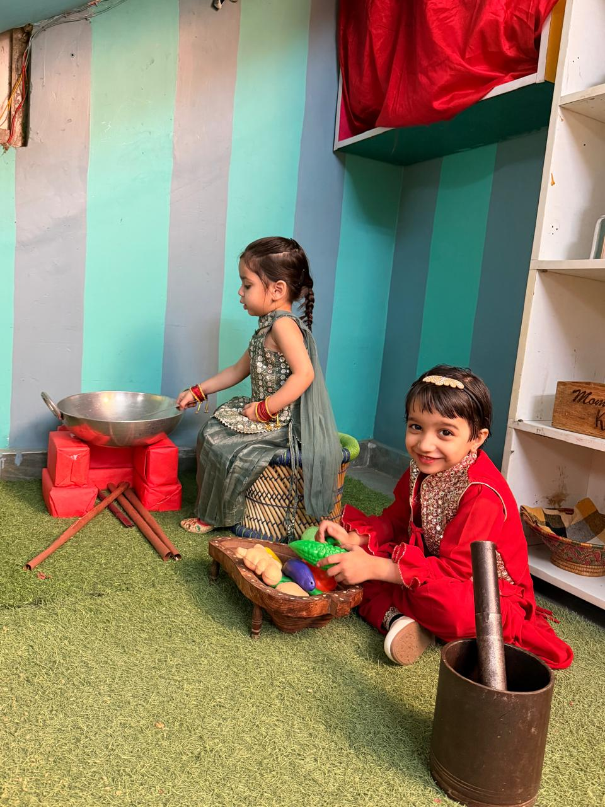

What will your child learn at every stage?
Pick a class to see the plan we follow — language, numbers, hands and behaviour — and what your child should be able to do by the end of the year.
{{ active.age }}
{{ active.name }}
{{ active.intro }}
A day includes
★ ★ ★
{{ a.title }}
★
{{ i }}
By the end of the year
{{ active.outcome }}
A day at Shining Star
The rhythm repeats every day, which is exactly why small children settle so fast. Timings shown are for the pre-primary classes.
See admissions & fees
{{ s.time }}
{{ s.what }}
{{ s.note }}
Tell us your actual timings and we'll correct these.